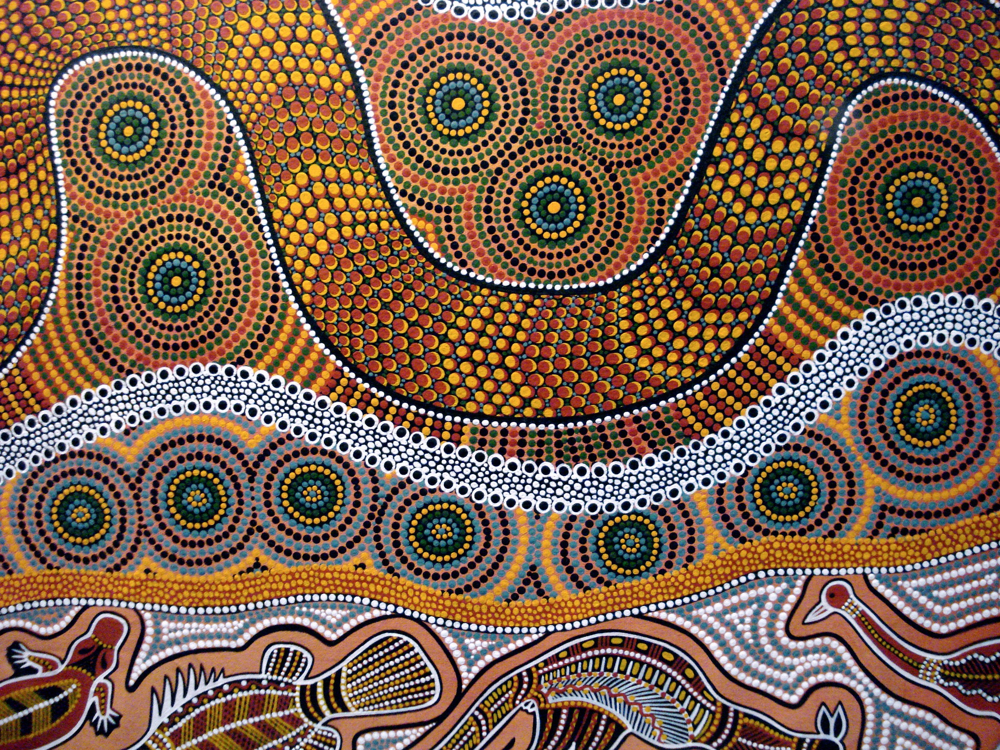

Achievements, Leadership, and Inspiration
This inline-block gallery uses consistent image dimensions, object-fit, object-position, borders, padding, margins, drop shadows, and caption overlays. Hover over an image or focus it with the keyboard to reveal the caption.


